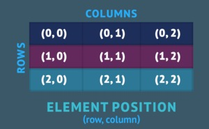
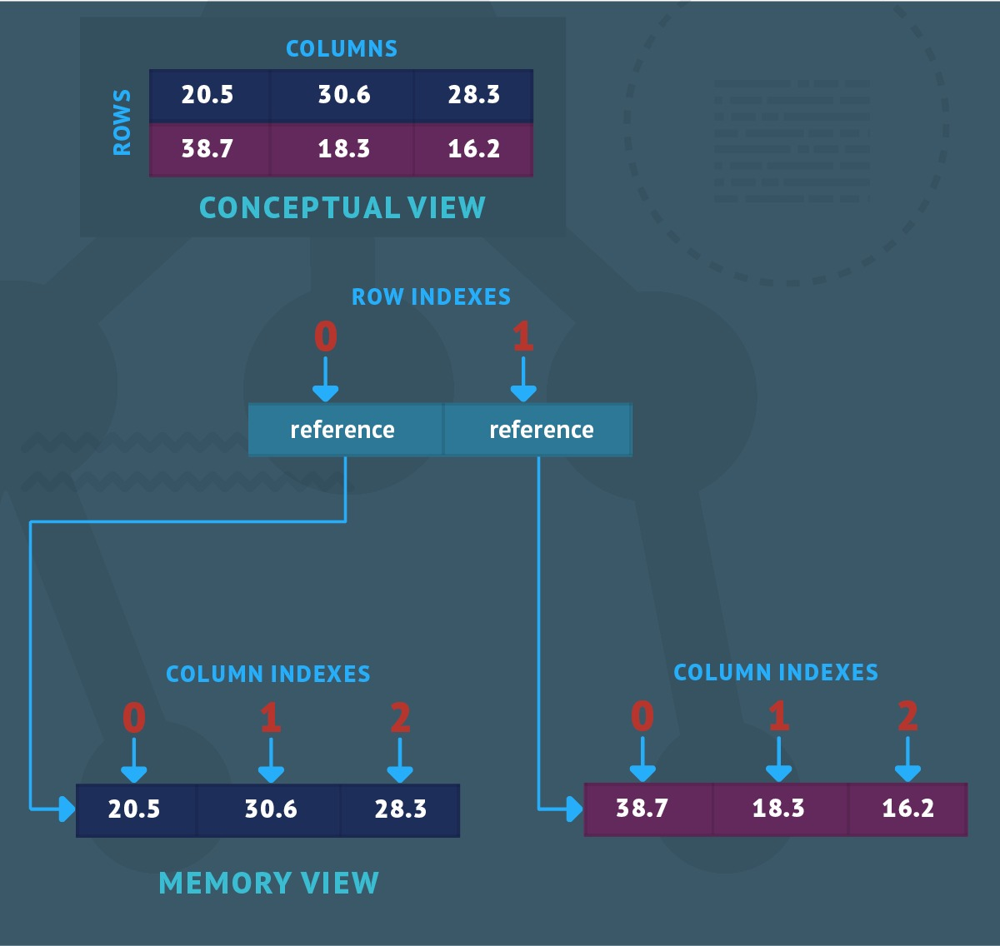
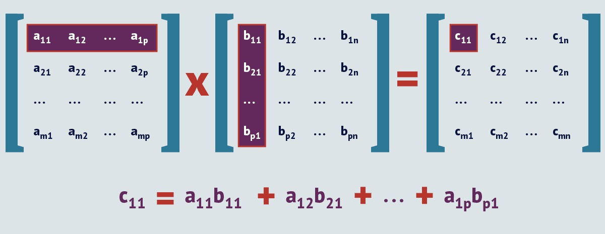
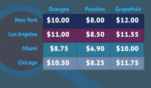
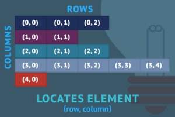

Multidimensional arrays and the Matrix Multiplication algorithm
Data structures and algorithm in Java, Part 2 instroduced a variety of techniques for searching and sorting one-dimensional arrays, which are the simplest arrays. In this tutorial you’ll explore multidimensional arrays. I’ll show you the three ways to create multidimensional arrays, then you’ll learn how to use the Matrix Multiplication algorithm to multiply elemtns in a two-dimensional array. I’ll also introduce ragged arrays and you’ll learn why they’re popular for big data applications. Finally, we’ll consider the question of whether an array is or is not a Java object.
This article sets you up for Part 4, which introduces searching and sorting with singly-linked lists.
Mutidimentsional arrays
A multidimensional array associates each element in the array with multiple indexes. The most commonly used multidimensional array is the two-dimensional array, also known as a table or matrix. A two-dimensional array associates each of its elements with two indexes.
We can conceptualize a two-dimensional array as a rectanglar grid of elements divided into rows and colums. We use the (row, column) natation to identify an element, as shown in Figure 1.

Because two-dimensional arrays are so commonly used, I’ll focus on them. What you learn about two-dimensional arrays can be generalized to higher-dimensional ones.
Creating two-dimensional arrays
There are three techniques for creating a two-dimensional array in Java:
- Using an initializer
- Using the keyword new
- Using the keyword new with an initializer
Using an initializer to create a two-dimensional array
The initializer-only approach to creating a two-dimensional array has the following syntax:1
'{' [rowInitializer (',' rowInitializer)*] '}'
rowinitializer has the following syntax:1
'{' [expr (',' expr)*] '}'
This syntax states that a two-dimensional array is an optional, comma-separated list of row initializer appearing between open - and close - brace characters. Futhermore, each row initializer is an optional, comma-separated list of expressions appearing between oopen - and close - brace characters. Like one-dimensional ararys, all expressions must evaluate to compatible types.
Here’s an example of a two-dimensional array:1
{ { 20.5, 30.6, 28.3 }, { -38.7, -18.3, -16.2 } }
This example creates a table with rows and three columns. Figure 2 presents a concetual (概念上的) view of this table along with a memory view that shows how Java lays out this (and every) table in memory.

Figure 2 reveals that Java represents a two-dimensional array as a one-dimensional row array whose elements reference one-dimensional column arrays. The row index identifies the column array; the column index identifies the data item.
Keyword new-only creation
The keyword new allocates memory for a two-dimensional array and returns its reference. This approach has the following syntax:1
'new' type '[' int_expr1 ']' '['int_expr2 ']'
The syntax states that a two-dimensional array is a region of (positive) int_expr1 row elements and (positive) int_expr2 column elements that all share the same type. Furthermore, all elements are zeroed. Here’s an example:1
new double[2][3] // Create a two-row-by-three-column table.
Keyword new and initializer creation
The keyword new with an initializer approach has the following syntax:1
'new' type '[' ']' [' ']' '{' [rowInitializer (',' rowInitializer)*] '}'
Where rowInitializer has the following syntax:1
'{' [expr (',' expr)*] '}'
The syntax blends the previous two examples. Because the number of elements can be determined from the comma-separated lists of expressions, you don’t provide an int_expr between either pair of square brackets. Here is an exmaple:1
new double [][] { { 20.5, 30.6, 28.3 }, { -38.7, -18.3, -16.2 } }
Two-dimensinal arrays and array variable
By itself, a newly-created two-dimensional array is useless. Its reference must be assigned to an array variable of a compatible type, either directly or via a method call. The follwoing syntaxes show how you would declare this variable:1
2type var_name '[' ']' '[' ']'
type '[' ']' '[' ']' var_name
Each syntax declares an array variable taht stores a reference to a two-dimensional array. It’s perferred to palce the square brackets after type. Consider the follwoing examples:1
2
3double[][] temperatures1 = { { 20.5, 30.6, 28.3 }, { -38.7, -18.3, -16.2 } };
double[][] temperatures2 = new double[2][3];
double[][] temperatures3 = new double[][] { { 20.5, 30.6, 28.3 }, { -38.7, -18.3, -16.2 } };
Like one-dimensional array variables, a two-dimensional array variable is associated with a .length property, which reutrns the length of the row array. For example, temperatures1.length returns 2. Each row element is also an array variable with a .length property, which returns the number of columns for the column array assigned to the row element. For example, temperatures1[0].length returns 3.
Given an array variable, you can access any element in a two-dimensional array by specifying an expression that agress with the following syntax:1
array_var '[' row_index ']' '[' col_index ']'
Both indexes are positive ints that range from 0 to one less than the value returned from the respective .length properties. Consider the next two examples:1
2double temp = temperatures1[0][1]; // Get value.
temperatures1[0][1] = 75.0; // Set value.
The first example returns the value in the second column of the first row (30.6). The second example repalces this value with 75.0.
If you spcify a negative idnex or an index that is greater than or equal to the value returned by the array variable’s .length property, Java creates and throws an ArrayIndexOutOfBoundsException object.
Multiplying two-dimensional arrays
Multiplying one matrix by another matrix is a comon operation in fields ranging from computer graphics, to economics, to the transportation industry. Developer usually use the Matrix Multiplication algorithm for this operation.
How does matrix mutiplication work? Let A represent a matrix with $m$ rows and $p$ columns. Similarly, let B represent a matrix with $p$ rows and $n$ columns. Multiply A by B to produce a maxtrix C, with $m$ rows and $n$ columns. Each cij entry in C is obtained by mutiplying all entries in A’s ith row by corresponding entries in B’s jth column, then adding the results. Figure 3 illustrates these operations.

Left-matrix columns must equal right-matrix rows
Matrix multiplcation requries that the number of columns (p) in the left matrix (A) equal the number of rows (p) in the right matrix (B). Otherwise, this algorithm won’t work.
The following pseudocode expresses Matrix Multiplication in a 2-row-by-2-column and a 2-row-by-1-column table context. (Recall that I introduced pseudocode in Part 1.)
1 | // == == == == == == |
Because of the three FOR loops, Matrix Multiplication has a time complexity of $O(n^3)$, which is pronounced “Big Oh of $n$ cubed”. Matrix Multiplication offers cubic performance, which gets expensive time-wise when large matrixes are multiplied. It offers a space complexity of $O(nm)$, which is pronounced “Big Oh of $n * m$”, for storing an additional matrix of $n$ rows by $m$ columns. This becomes $O(n^2)$ for square matrixes.
I’ve created a MatMult Java application that lets you experiment with Matrix Multiplication. Listing 1 presents this application’s source code.
Listing 1. A Java application of experimenting with Matrix Multiplication
1 | public final class MatMult |
MatMult declares a pair of matrixes and dumps their values to standard output. It then multiplies both matrixes and dumps the result matrix to standard output.
Compile Listing 1 as follows:1
javac MatMult.java
Run the resulting application as follows:1
java MatMult
You should observe the following output:1
2
3
4
5
6
7
810 30
20 40
5
7
260
380
Example of matrix multiplication
Let’s explore a problem that is best solved by matrix multiplication. In this scenario, a fruit grower in Florida loads a couple of emitrailers with 1,250 boxes of oranges, 400 boxes of peaches, and 250 boxes of grapefruit. Figure 4 shows a chart of the market price per box for each kind of fruit, in four different cities.

Our problem is to determine where the fruit should be shipped and sold for maximum gross income. To solve that problem, we first reconstruct the chart from Figure 4 as a four-row by three-column price matrix. From this, we can construct a tree-row by one-column quntity matrix, which appears below:1
2
3
4
5
6
7== ==
| 1250 |
| |
| 400 |
| |
| 250 |
== ==
With both matrixes on hand, we simply multiply the price matrix by the quantity matrix to produce a gross income matrix:1
2
3
4
5
6
7
8
9== == == ==
| 10.00 8.00 12.00 | == == | 18700.00 | New York
| | | 1250 | | |
| 11.00 8.50 11.55 | | | | 20037.50 | Los Angeles
| | X | 400 | = | |
| 8.75 6.90 10.00 | | | | 16197.50 | Miami
| | | 250 | | |
| 10.50 8.25 11.75 | == == | 19362.50 | Chicago
== == == ==
Sending both semitrailers to Los Angeles will produce the highest gross income. But when distance aand fuel costs are considered, perhaps New Yourk is a better bet for yielding the highest income.
Ragged arrays
Having learned about two-dimensional arrays, you might now wonder whether it’s possible to assign one-dimensional column arrays with different lengths to elements of a row array. The answer is yes. Consider these examples:1
2
3double[][] temperatures1 = { { 20.5, 30.6, 28.3 }, { -38.7, -18.3 } };
double[][] temperatures2 = new double[2][];
double[][] temperatures3 = new double[][] { { 20.5, 30.6, 28.3 }, { -38.7, -18.3 } };
The first and third examples crate a two-dimensional array where the first row contains three columns and the second row contains two columns. The second example creates an array with two rows and an unspecified number of columns.
After creating temperature2’s row array, its elements must be populated with references to new column arrays. The following example demonstrates, assigning 3 columns to the first rwo and 2 columns to the second row:1
2temperatures2[0] = new double[3];
temperatures2[1] = new double[2];
The resulting two-dimensional array is known as a ragged array. Here is a second example:1
2
3
4
5
6int[][] x = new int[5][];
x[0] = new int[3];
x[1] = new int[2];
x[2] = new int[3];
x[3] = new int[5];
x[4] = new int[1];
FFigure 5 presents a conceptual view of this second ragged array.

Ragged arrays are useful data structures because of their memory-saving capabiliy. For example, consider a spreadsheet with the potential of 100,000 rows by 20,000 columns. If we attempt to use a matrix to hold the spreadsheet, we require a great deal of memory. But suppose most of the spreadsheet’s cells contain defualt values, such as 0 for numeric cells and null for nonnumeric cells. If we use a ragged array instead of a matrix, we store only those cells that contain nonnumeric data. (Of course, we need some kind of mapping machinism that mpas spreadsheet (row, column) coordinates to ragged array (row, colum) coordinates.)
Using ragged arrays for big data
Ragged arrays come in handy when managing Big Data, such as the vast amounts of data generated by the Internet of Things.
Why arrays are objects
According to the first sentence of Chatper 10 in the Java Language Specification arrays are objects in Java. Under the hood, each array is an instance of a hidden class that inherits java.lang.Object’s 11 methods. The array instance override Object’s protected Object clone() throws CloneNotSupprotedException method, allowing the array to be shallowly cloned. The hidden class additionally provides a .length field.
Listing 2’s ArrayIsObject source code demonstrates the associatation between arrays and objects.
Listing 2. ArrayIsObject
1 | public final class ArrayIsObject |
ArrayIsObeject creates a referenced and b referenced double precision floating-point arrays with the same contents and lengths. For the a referenced array, a.getClass() returns class [D, where [D is the name of the array’s hidden class.
Despite the two arrays having the same contents, a.equals(b) returns false bacause equals() compares references (not contents), and a and b contain different references. b’s reference is assigned to c, and b.equals(c) returns true because b and c reference the same array. c.clone() creates a shallow clone of c, and a reference to this new array is assigned to d.
To prove that the d-referenced array contains the same contents as the c-referenced array, the for loop iterates over all elements and prints their contents to the standard output. The loop reads the contents of d’s read-only .length field to determine over how many elements to iterate.
Tip: Don’t specify array length in source code
In source code, specify .length (as in d.length) instead of an array’s actual length. This eliminates the risk of introducing length-related bugs into your code, should you later change the array’s length ini its creation code.
Compile Listing 2 as follows:1
javac ArrayIsObject.java
Run the resulting application as follows:1
java ArrayIsObject
You should observe the following output:1
2
3
4
5
6
7a's class is class [D
a and b are not equal
b and c are equal
c and d are not equal
100.5
200.5
300.5